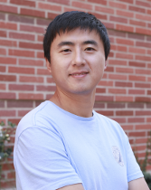
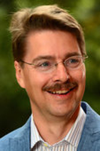
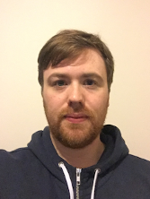
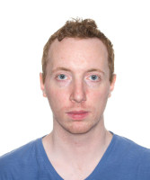
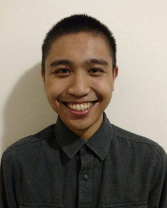

Miryung Kim
Prof. Miryung Kim is an Associate Professor at the University of California, Los Angeles. She is primarily interested in developing program analysis algorithms and development tools through her research group, the Software Engineering and Analysis Laboratory.
Harry Xu

Prof. Harry Xu is an Associate Professor at the University of California, Los Angeles. His research ranges from softawre engineering, through programming languages and compilers, to runtime/operating/distrubted systems and computer architectures.
Jens Palsberg

Prof. Jens Palsberg is a Professor at the University of California, Los Angeles. His primiary resesarch interests are compilers, embedded systems, and programming languages.
Bobby R. Bruce

Dr. Bobby R. Bruce is a Postdoctoral Scholar at the University of California, Los Angeles. His research interests include Genetic Improvement, and Search-Based Software Engineering.
Tianyi Zhang
Tianyi Zhang is a Ph.D candidate at the University of California, Los Angeles. His main research interests are software evolution, mining software repositories, and human-computer interaction.
Christian Kalhauge
Christian Kalhauge is a fourth-year PhD student at UCLA. His primary focus is on the interplay of static and dynamic analyses, bugs in concurrent programs, and automatic reporting bugs in tools that work on Java ByteCode.
Jon Eyolfson

Jon Eyolfson is a Postdoctoral scholar at the University of California, Los Angeles. His background is mix of static and dynamic analysis with empricial studies. His current interests are trying to leverage machine learning for software systems.
Christian Navasca

Christian Navasca is a first year PhD student at UCLA, advised by Prof. Harry Xu. His research aims to provide runtime and compiler support for Big Data systems.